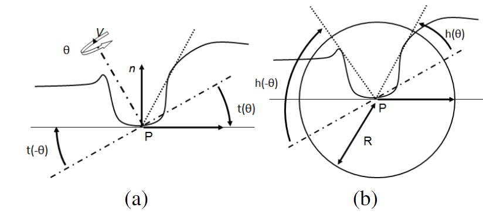
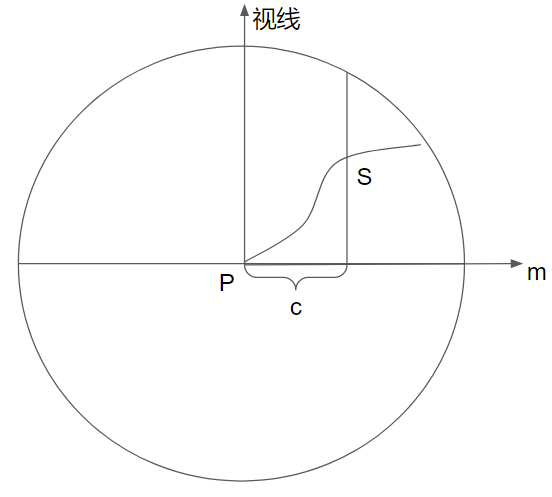

一、出射光线的计算
假设物体表面都是Lambertian Surface，即满足
Lo(p,n,v)=πρssE(p,n)(1)其中，p为当前着色点的坐标，n为法线向量，v为视线向量，ρss为次表面散射率，E(p,n)为当前着色点接收到的irradiance。
我们简单假设ρss=π，这只是单纯地为了计算方便，则有
Lo(p,n,v)=E(p,n)=∫l∈Ωv(p,l)(n⋅l)+L(p,l)dl(2)其中，v(p,l)为可见性函数，若光源可从l射向p点，则v(p,l)=1，否则为0。L(p,l)为光照函数，表示沿l射向p的光照强度。
二、辐射度(irradiance)的计算
计算HBAO即计算环境光照，假设环境光源于无穷远处且各方向的环境光照都相等，为一定值LA，则
E(p,n)=LA∫l∈Ωv(p,l)(n⋅l)+dl(3)再设AO因子kA：
kA(p,n)=π1∫l∈Ωv(p,l)(n⋅l)+dl(4)则有
E(p,n)=πkA(p,n)LA(5)三、AO因子(kA)的计算
假设可见性函数仅和遮挡有关，并只在一个半径为R的半球内计算可见性函数,并用一个衰减函数W(p,l)代替余弦项(n⋅l)+，则
kA(p,n)≈π1∫l∈Ωv(p,l)W(p,l)dl≈π1(1−2π1∫θ=−ππ∫α=−2π2π(1−v(p,l))W(p,l)cosαdαdθ)(6)其中，cosα为dl=cosαdαdθ时引入的。
1. h(θ)与t(θ)的计算

如上图，引入两个角度t(θ)和h(θ)。t(θ)表示切平面（按图示的顺时针）旋转到视线平面所需的角度。h(θ)表示在θ指定的方向上，在切平面上，使v(p,l)=1的最小α，即切平面上最开始没有遮挡的（关于视线平面的）角度。
这两个角度之间的范围描述了这个半圆内哪些空间有遮挡物，若假设P点周围是连续的深度场（即有遮挡物的角度范围是连续的），则式(6)可转化为
kA(p,n)≈π1(1−2π1∫θ=−ππ∫α=t(θ)h(θ)W(p,l)cosαdαdθ)=π1(1−2π1∫θ=−ππW(θ)(sin(h(θ))−sin(t(θ)))dθ)(6.5)a. t(θ)的计算
为了计算t(θ)，首先引入视线平面的切向量m(θ)。
建立视坐标系，z轴正向为视线方向，原点为着色点，x轴、y轴只要满足正交则任意。
则对任意方位角θ，可设m(θ)=(cosθ,sinθ,0)，满足m(θ)⋅n=0（即为视线平面的切向量），且与方位角θ表示的方位平行，且为单位向量。
引入m(θ)后，即可计算t(θ)：
t(θ)=arccos(n⋅m)−2π(7)b. h(θ)的计算
设S(P,c)为从P点出发沿m走c的距离后作平行于视线向量的直线，其与几何体的交点，如下图所示：

再设d(P,c)=S(P,c)−P，ϕ(P,c)=arctan(∣∣d(P,l).xy∣∣−d(P,c).z)。ϕ(P,c)即为S(P,c)与P点的连线关于视线平面所成的夹角，设其最大值为：
ϕmax=c∈(0,R]max{ϕ(P,c)}(8)设cmax=minc∈(0,R]{ϕ(P,c)=ϕmax}，即使得ϕ最大的c中最小的那个c。
然后可计算h(θ)：
h(θ)={ϕmaxt(θ)if ϕmax≥t(θ)else (9)2. W(θ)的计算
W(θ)为距离衰减函数，最高的遮挡点离着色点越远，其值就越小，定义为：
W(θ)=max{0,1−3Rr(θ)}(10)其中r(θ)为距离函数，定义为：
r(θ)={∣∣S(P,cmax)−P∣∣Rif ϕmax≥t(θ)else (11)之所以W(θ)中分母用3R，而不是R，是为了避免kA过小。
四、kA的积分计算
上一节中在式(6.5)中导出了kA的计算式，并分小节介绍了其中的变量该如何计算。但积分式本身不存在解析解，所以需要使用蒙特卡洛方法进行数值计算。为了方便，在此复写一下kA的计算式：
kA(p,n)≈π1(1−2π1∫θ=−ππW(θ)(sin(h(θ))−sin(t(θ)))dθ)在[−π,π]范围内取Nd个θ，记为θ1,θ2,...,θNd，则上式积分可变为：
∫θ=−ππW(θ)(sin(h(θ))−sin(t(θ)))dθ=Nd1i=1∑NdW(θi)(sin(h(θi))−sin(t(θi)))(12)1. t(θi)和h(θi)的计算
t(θi)的计算与式(7)一样，为方便，在此复写：
t(θi)=arccos(n⋅m(θi))−2πh(θi)的计算中需要进行无数个变量的大小比较以得到最大角度，为了能够进行数值计算，我们采样其中几个点。为了方便，在此复写式(8)和式(9)
ϕmax=c∈(0,R]max{ϕ(P,c)}h(θ)={ϕmaxt(θ)if ϕmax≥t(θ)else 在(0,R]范围内取Ns个c，记为c1,c2,...,cNs。将ϕmax的计算转换为在这Ns个值内求最大，即：
ϕmax=j=1,2,...,Nsmax{ϕ(P,cj)}(13)而h(θ)的计算式不变，依然为式(9)。
2. W(θi)的计算
W(θi)的计算与式(10)相同，为了方便，在此复写：
W(θi)=max{0,1−3Rr(θi)}